Marker-Controlled Watershed Segmentation
Separating touching objects in an image is one of the more difficult image processing operations. The watershed transform is often applied to this problem. The watershed transform finds "catchment basins" and "watershed ridge lines" in an image by treating it as a surface where light pixels are high and dark pixels are low.
Segmentation using the watershed transform works better if you can identify, or "mark," foreground objects and background locations. Marker-controlled watershed segmentation follows this basic procedure:
1. Compute a segmentation function. This is an image whose dark regions are the objects you are trying to segment.
2. Compute foreground markers. These are connected blobs of pixels within each of the objects.
3. Compute background markers. These are pixels that are not part of any object.
4. Modify the segmentation function so that it only has minima at the foreground and background marker locations.
5. Compute the watershed transform of the modified segmentation function.
This example highlights many different Image Processing Toolbox™ functions, including fspecial, imfilter, watershed, label2rgb, imopen, imclose, imreconstruct, imcomplement, imregionalmax, bwareaopen, graythresh, and imimposemin.
Contents
Step 1: Read in the Color Image and Convert it to Grayscale
rgb = imread('pears.png'); I = rgb2gray(rgb); imshow(I) text(732,501,'Image courtesy of Corel(R)',... 'FontSize',7,'HorizontalAlignment','right')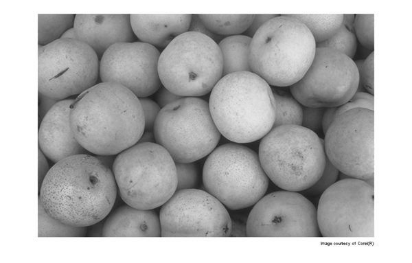
Step 2: Use the Gradient Magnitude as the Segmentation Function
Use the Sobel edge masks, imfilter, and some simple arithmetic to compute the gradient magnitude. The gradient is high at the borders of the objects and low (mostly) inside the objects.
hy = fspecial('sobel'); hx = hy'; Iy = imfilter(double(I), hy, 'replicate'); Ix = imfilter(double(I), hx, 'replicate'); gradmag = sqrt(Ix.^2 + Iy.^2); figure, imshow(gradmag,[]), title('Gradient magnitude (gradmag)')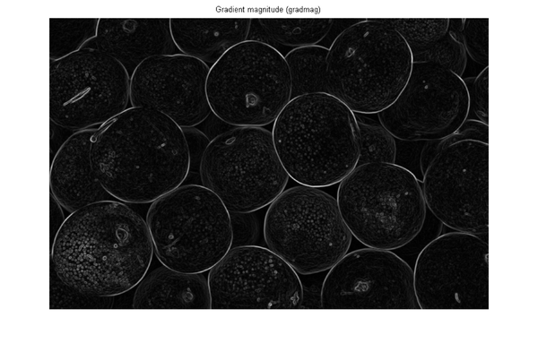
Can you segment the image by using the watershed transform directly on the gradient magnitude?
L = watershed(gradmag);
Lrgb = label2rgb(L);
figure, imshow(Lrgb), title('Watershed transform of gradient magnitude (Lrgb)')
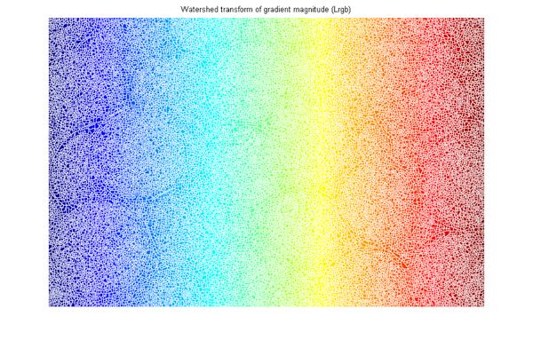 No. Without additional preprocessing such as the marker computations below, using the watershed transform directly often results in "oversegmentation."
Step 3: Mark the Foreground Objects
A variety of procedures could be applied here to find the foreground markers, which must be connected blobs of pixels inside each of the foreground objects. In this example you'll use morphological techniques called "opening-by-reconstruction" and "closing-by-reconstruction" to "clean" up the image. These operations will create flat maxima inside each object that can be located using imregionalmax.
Opening is an erosion followed by a dilation, while opening-by-reconstruction is an erosion followed by a morphological reconstruction. Let's compare the two. First, compute the opening using imopen.
se = strel('disk', 20); Io = imopen(I, se); figure, imshow(Io), title('Opening (Io)')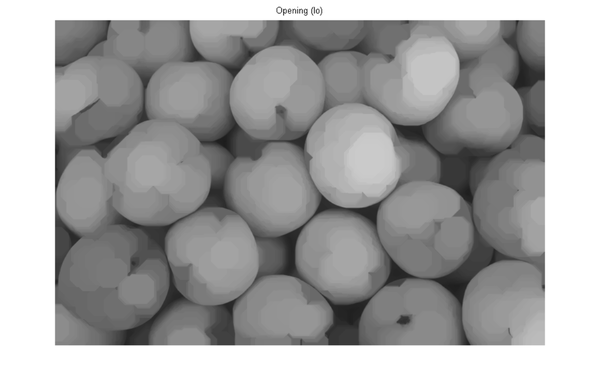
Next compute the opening-by-reconstruction using imerode and imreconstruct.
Ie = imerode(I, se);
Iobr = imreconstruct(Ie, I);
figure, imshow(Iobr), title('Opening-by-reconstruction (Iobr)')
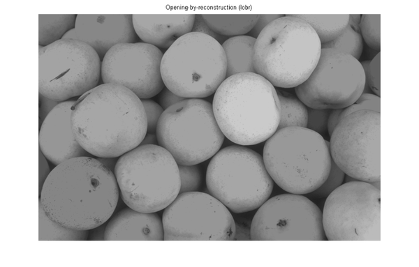 Following the opening with a closing can remove the dark spots and stem marks. Compare a regular morphological closing with a closing-by-reconstruction. First try imclose:
Ioc = imclose(Io, se);
figure, imshow(Ioc), title('Opening-closing (Ioc)')
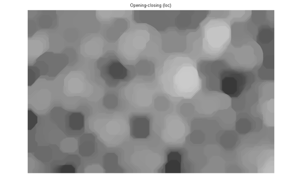 Now use imdilate followed by imreconstruct. Notice you must complement the image inputs and output of imreconstruct.
Iobrd = imdilate(Iobr, se);
Iobrcbr = imreconstruct(imcomplement(Iobrd), imcomplement(Iobr));
Iobrcbr = imcomplement(Iobrcbr);
figure, imshow(Iobrcbr), title('Opening-closing by reconstruction (Iobrcbr)')
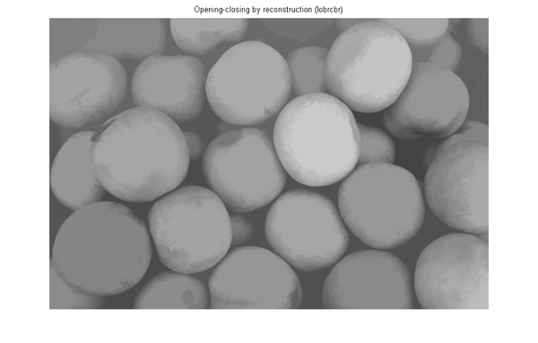 As you can see by comparing Iobrcbr with Ioc, reconstruction-based opening and closing are more effective than standard opening and closing at removing small blemishes without affecting the overall shapes of the objects. Calculate the regional maxima of Iobrcbr to obtain good foreground markers.
fgm = imregionalmax(Iobrcbr);
figure, imshow(fgm), title('Regional maxima of opening-closing by reconstruction (fgm)')
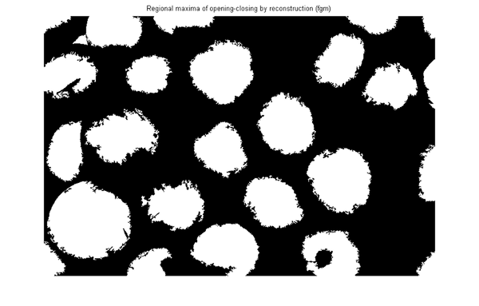 To help interpret the result, superimpose the foreground marker image on the original image.
I2 = I;
I2(fgm) = 255;
figure, imshow(I2), title('Regional maxima superimposed on original image (I2)')
Notice that some of the mostly-occluded and shadowed objects are not marked, which means that these objects will not be segmented properly in the end result. Also, the foreground markers in some objects go right up to the objects' edge. That means you should clean the edges of the marker blobs and then shrink them a bit. You can do this by a closing followed by an erosion.
se2 = strel(ones(5,5)); fgm2 = imclose(fgm, se2); fgm3 = imerode(fgm2, se2);
This procedure tends to leave some stray isolated pixels that must be removed. You can do this using bwareaopen, which removes all blobs that have fewer than a certain number of pixels.
fgm4 = bwareaopen(fgm3, 20);
I3 = I;
I3(fgm4) = 255;
figure, imshow(I3)
title('Modified regional maxima superimposed on original image (fgm4)')
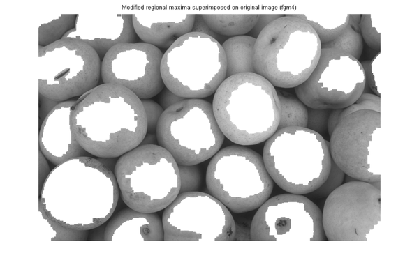 Step 4: Compute Background Markers
Now you need to mark the background. In the cleaned-up image, Iobrcbr, the dark pixels belong to the background, so you could start with a thresholding operation.
bw = im2bw(Iobrcbr, graythresh(Iobrcbr));
figure, imshow(bw), title('Thresholded opening-closing by reconstruction (bw)')
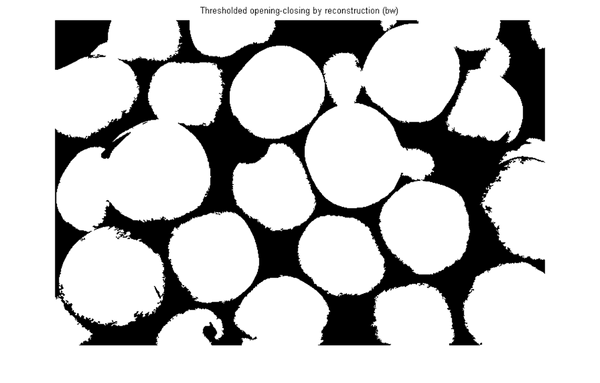 The background pixels are in black, but ideally we don't want the background markers to be too close to the edges of the objects we are trying to segment. We'll "thin" the background by computing the "skeleton by influence zones", or SKIZ, of the foreground of bw. This can be done by computing the watershed transform of the distance transform of bw, and then looking for the watershed ridge lines (DL == 0) of the result.
D = bwdist(bw);
DL = watershed(D);
bgm = DL == 0;
figure, imshow(bgm), title('Watershed ridge lines (bgm)')
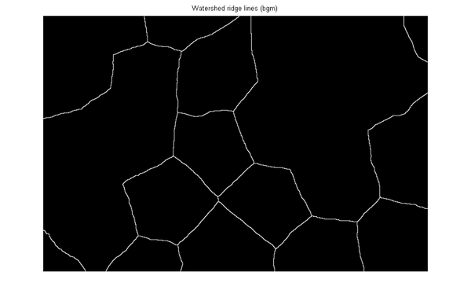 Step 5: Compute the Watershed Transform of the Segmentation Function.
The function imimposemin can be used to modify an image so that it has regional minima only in certain desired locations. Here you can use imimposemin to modify the gradient magnitude image so that its only regional minima occur at foreground and background marker pixels.
gradmag2 = imimposemin(gradmag, bgm | fgm4);
Finally we are ready to compute the watershed-based segmentation.
L = watershed(gradmag2);
Step 6: Visualize the Result
One visualization technique is to superimpose the foreground markers, background markers, and segmented object boundaries on the original image. You can use dilation as needed to make certain aspects, such as the object boundaries, more visible. Object boundaries are located where L == 0.
I4 = I;
I4(imdilate(L == 0, ones(3, 3)) | bgm | fgm4) = 255;
figure, imshow(I4)
title('Markers and object boundaries superimposed on original image (I4)')
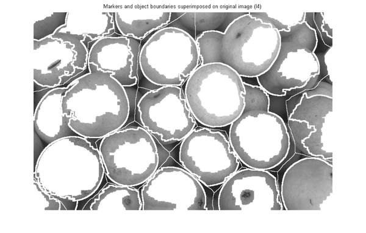 This visualization illustrates how the locations of the foreground and background markers affect the result. In a couple of locations, partially occluded darker objects were merged with their brighter neighbor objects because the occluded objects did not have foreground markers.
Another useful visualization technique is to display the label matrix as a color image. Label matrices, such as those produced by watershed and bwlabel, can be converted to truecolor images for visualization purposes by using label2rgb.
Lrgb = label2rgb(L, 'jet', 'w', 'shuffle'); figure, imshow(Lrgb) title('Colored watershed label matrix (Lrgb)')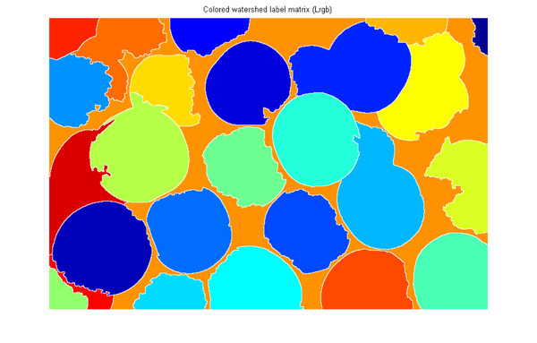
You can use transparency to superimpose this pseudo-color label matrix on top of the original intensity image.
figure, imshow(I), hold on himage = imshow(Lrgb); set(himage, 'AlphaData', 0.3); title('Lrgb superimposed transparently on original image')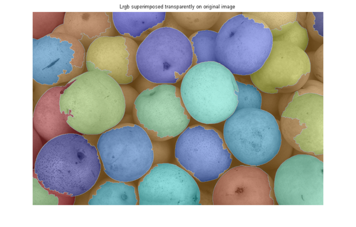